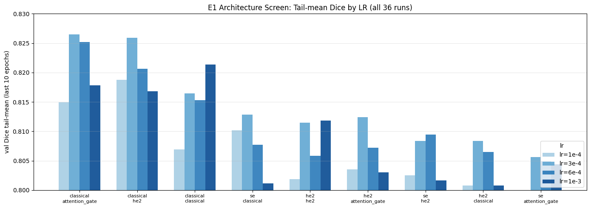
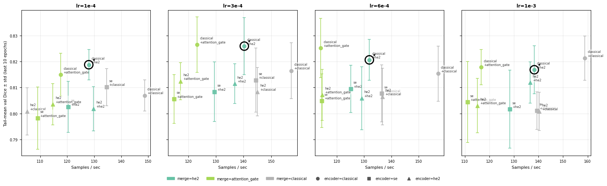

E1 — ISIC 2017 UNet2D Architecture Sweep Summary (all Learning Rates)¶
Question. Across a full 3×3 grid of encoder × merge architectures swept over four learning rates, which (architecture, LR) pair produces the best ISIC 2017 segmentation model — and is the best-performing LR the same for every architecture?
Design. 36 single-seed runs: a 3×3 grid of encoder (classical, se, he2) × merge (he2, attention_gate, classical), each trained at four fixed learning rates (1e-4, 3e-4, 6e-4, 1e-3) — 9 architectures × 4 LRs. The performance metric is the Dice coefficient at threshold 0.5 on the ISIC 2017 validation set. This is a joint architecture × LR sweep: every architecture is evaluated at all four LRs, so the analysis selects both the architecture and
its accompanying LR. This notebook aggregates across the four per-LR experiments to compare architectures within and across LRs and to read off the best LR for each.
Source. Four MLflow databases under mlruns/, one per LR — E1-isic2017-unet2d-model-lr-1seed.db (3e-4), …-modelsw-lr_6e-4-1seed.db, …-lr_1e-3-1seed.db, …-lr_1e-4-1seed.db — 36 runs (9 architectures × 4 LRs), all FINISHED. Each per-LR notebook (E1_isic2017_unet2d_modelsw_lr_*_1seed_analysis.ipynb) holds the full run-level breakdown.
Executive summary¶
Screen: 3×3 encoder × merge grid for 4 LRs ({
1e-4,3e-4,6e-4,1e-3}), 36 single-seed runs; metric = val Dice @ 0.5Selection criterion: highest tail-mean (last-10-epoch) Dice, tie-broken on cross-LR std, overfitting gap and throughput (§2)
Criterion (at |
|
|
|---|---|---|
Peak Dice |
0.8427 |
0.8412 |
Tail-mean Dice |
0.8259 |
0.8265 |
Mean tail-Dice across 4 LRs |
0.8205 |
0.8211 |
Std across 4 LRs |
0.0039 |
0.0056 |
Overfitting gap |
0.078 |
0.084 |
Throughput (sps) |
140 |
123 |
Findings:
lr=3e-4is the best LR for the recommendedclassicalarchitectures and the modal winner overall (best plateau LR for 6 of 9 architectures); 3 architectures peak elsewhere (1e-3or6e-4), so the optimal LR is not uniform across the gridclassicalis the top encoder at every LR (+0.010–0.016overse);he2andattention_gatemerges tie within single-seed noise (Δ0.0006);classicalmerge lags and is eliminatedhe2wins every cost/reliability axis: 14 % faster, lower overfitting, lower cross-LR std
Decision: ``classical`` encoder + ``he2`` merge at ``lr=3e-4``. The he2/attention_gate tie-break is resolved at multi-seed in E2.
1. Data¶
Load and concatenate the four per-LR MLflow databases into a single sweep table (all_runs), one row per run, tagged with its learning rate. summarize_runs reduces each run to peak / tail-plateau / final metrics; load_sweep_runs stacks the four experiments and adds the lr column the cross-LR helpers pivot on.
[10]:
# ── Imports ──────────────────────────────────────────────────────────────────
import sys
from pathlib import Path
PROJECT_ROOT = Path('/teamspace/studios/this_studio/repos/SkiNet')
sys.path.insert(0, str(PROJECT_ROOT))
import pandas as pd
from SkiNet.Utils.analysis.lr_sweep import (
load_sweep_runs,
best_run_per_group,
rank_all_runs,
pivot_dim_effect,
arch_consistency,
)
from SkiNet.Utils.analysis.plotting import plot_group_bar, plot_sweep_facet
# ── Configuration — every tunable argument lives in this cell ────────────────
MLRUNS = PROJECT_ROOT / 'mlruns' # directory holding the per-LR MLflow databases
MONITOR = 'val_dice' # validation metric summarised per run
# group label (learning rate) → (db_filename, mlflow_experiment_name)
EXPERIMENTS = {
'3e-4': ('E1-isic2017-unet2d-model-lr-1seed.db', 'E1-isic2017-unet2d-model-lr-1seed'),
'6e-4': ('E1-isic2017-unet2d-modelsw-lr_6e-4-1seed.db', 'E1-isic2017-unet2d-modelsw-lr_6e-4-1seed'),
'1e-3': ('E1-isic2017-unet2d-modelsw-lr_1e-3-1seed.db', 'E1-isic2017-unet2d-modelsw-lr_1e-3-1seed'),
'1e-4': ('E1-isic2017-unet2d-modelsw-lr_1e-4-1seed.db', 'E1-isic2017-unet2d-modelsw-lr_1e-4-1seed'),
}
LR_ORDER = ['1e-4', '3e-4', '6e-4', '1e-3'] # canonical LR ordering for tables and facets
# ── Presentation ─────────────────────────────────────────────────────────────
pd.set_option('display.max_columns', 80)
pd.set_option('display.width', 200)
pd.set_option('display.float_format', '{:.4f}'.format)
[11]:
# ── Load: 36 runs = 9 architectures × 4 learning rates ───────────────────────
all_runs = load_sweep_runs(EXPERIMENTS, MLRUNS, group_by='lr', monitor=MONITOR)
f"Loaded {len(all_runs)} runs across {all_runs['lr'].nunique()} LRs: {sorted(all_runs['lr'].unique())}"
[11]:
"Loaded 36 runs across 4 LRs: ['1e-3', '1e-4', '3e-4', '6e-4']"
2. Selection methodology¶
2.1 Primary ranking metric¶
At one seed, runs are ranked on ``val_dice_tail_mean`` — the mean validation Dice (threshold 0.5) over the last 10 epochs, i.e. the stable plateau — rather than the single best epoch (val_dice_max). Peak Dice is retained as a secondary, reported column.
2.2 Selection rules¶
The architecture is selected in two passes over the 9 encoder × merge combinations:
# |
Criterion |
Operational definition |
|---|---|---|
1 |
Best plateau Dice |
Highest |
2 |
Cross-LR robustness |
Lowest std of |
When two architectures are tied on plateau Dice within single-seed noise (Δ ≲ 0.001), the decision falls to the secondary cost/reliability axes:
Tie-break axis |
Column |
Preference |
|---|---|---|
Generalisation |
|
lower |
Stability from peak |
|
lower |
Throughput |
|
higher |
2.3 Why a single seed is sufficient here¶
E1 is a combined architecture-learning rate screen: its job is to eliminate clearly inferior combinations and surface the one or two finalists. Resolving a remaining tie-break requires the paired multi-seed design, which is carried out in E2.
3. Results¶
3.1 Best run per LR¶
Top-ranked run at each learning rate (by val_dice_tail_mean) with key secondary metrics — the per-LR champions feeding the cross-LR comparison.
[12]:
best_run_per_group(all_runs)
[12]:
| lr | encoder | merge | val_dice_tail_mean | val_dice_max | val_dice_max_epoch | generalization_gap_final | samples_per_sec | |
|---|---|---|---|---|---|---|---|---|
| 0 | 3e-4 | classical | attention_gate | 0.8265 | 0.8412 | 74 | 0.084 | 123.2 |
| 1 | 6e-4 | classical | attention_gate | 0.8252 | 0.8375 | 99 | 0.098 | 114.2 |
| 2 | 1e-3 | classical | classical | 0.8213 | 0.8306 | 92 | 0.081 | 158.9 |
| 3 | 1e-4 | classical | he2 | 0.8188 | 0.8273 | 97 | 0.091 | 128.0 |
3.2 All 36 runs ranked¶
Full cross-LR ranking sorted by val_dice_tail_mean (stable-plateau Dice). Columns:
column |
what it measures |
|---|---|
|
Single best-epoch Dice at fixed threshold 0.5 — the peak this run reached |
|
Mean Dice over last 10 epochs — the stable plateau |
|
Std over the same tail window — convergence noise |
|
Epoch at which the peak occurred |
|
|
|
|
[13]:
rank_all_runs(all_runs)
[13]:
| lr | encoder | merge | val_dice_max | val_dice_tail_mean | tail_std | epoch | gen_gap | drop | samples_per_sec | |
|---|---|---|---|---|---|---|---|---|---|---|
| 0 | 3e-4 | classical | attention_gate | 0.8412 | 0.8265 | 0.0107 | 74 | 0.084 | 0.019 | 123.2 |
| 1 | 3e-4 | classical | he2 | 0.8427 | 0.8259 | 0.0109 | 97 | 0.078 | 0.017 | 140.3 |
| 2 | 6e-4 | classical | attention_gate | 0.8375 | 0.8252 | 0.0114 | 99 | 0.098 | 0.032 | 114.2 |
| 3 | 1e-3 | classical | classical | 0.8306 | 0.8213 | 0.0085 | 92 | 0.081 | 0.012 | 158.9 |
| 4 | 6e-4 | classical | he2 | 0.8334 | 0.8206 | 0.0078 | 97 | 0.082 | 0.011 | 131.9 |
| 5 | 1e-4 | classical | he2 | 0.8273 | 0.8188 | 0.0058 | 97 | 0.091 | 0.018 | 128.0 |
| 6 | 1e-3 | classical | attention_gate | 0.8277 | 0.8178 | 0.0068 | 88 | 0.082 | 0.008 | 116.6 |
| 7 | 1e-3 | classical | he2 | 0.8320 | 0.8168 | 0.0092 | 92 | 0.077 | 0.009 | 138.3 |
| 8 | 3e-4 | classical | classical | 0.8299 | 0.8165 | 0.0107 | 84 | 0.090 | 0.014 | 157.3 |
| 9 | 6e-4 | classical | classical | 0.8319 | 0.8153 | 0.0106 | 99 | 0.094 | 0.021 | 157.1 |
| 10 | 1e-4 | classical | attention_gate | 0.8302 | 0.8149 | 0.0082 | 87 | 0.102 | 0.033 | 117.6 |
| 11 | 3e-4 | se | classical | 0.8307 | 0.8128 | 0.0123 | 99 | 0.095 | 0.030 | 144.5 |
| 12 | 3e-4 | he2 | attention_gate | 0.8256 | 0.8124 | 0.0071 | 99 | 0.092 | 0.023 | 117.2 |
| 13 | 1e-3 | he2 | he2 | 0.8240 | 0.8119 | 0.0079 | 92 | 0.075 | 0.003 | 136.6 |
| 14 | 3e-4 | he2 | he2 | 0.8222 | 0.8115 | 0.0076 | 99 | 0.078 | 0.011 | 136.8 |
| 15 | 1e-4 | se | classical | 0.8248 | 0.8102 | 0.0071 | 92 | 0.083 | 0.013 | 134.5 |
| 16 | 6e-4 | se | he2 | 0.8323 | 0.8095 | 0.0091 | 70 | 0.078 | 0.017 | 125.1 |
| 17 | 3e-4 | he2 | classical | 0.8238 | 0.8083 | 0.0093 | 99 | 0.087 | 0.019 | 145.0 |
| 18 | 3e-4 | se | he2 | 0.8243 | 0.8083 | 0.0115 | 91 | 0.089 | 0.018 | 129.5 |
| 19 | 6e-4 | se | classical | 0.8240 | 0.8077 | 0.0109 | 70 | 0.091 | 0.021 | 136.4 |
| 20 | 6e-4 | he2 | attention_gate | 0.8225 | 0.8072 | 0.0098 | 99 | 0.092 | 0.020 | 114.7 |
| 21 | 1e-4 | classical | classical | 0.8178 | 0.8069 | 0.0060 | 84 | 0.100 | 0.018 | 148.7 |
| 22 | 6e-4 | he2 | classical | 0.8191 | 0.8065 | 0.0108 | 99 | 0.074 | 0.003 | 136.7 |
| 23 | 6e-4 | he2 | he2 | 0.8248 | 0.8059 | 0.0122 | 84 | 0.080 | 0.014 | 129.1 |
| 24 | 3e-4 | se | attention_gate | 0.8195 | 0.8056 | 0.0094 | 83 | 0.087 | 0.010 | 114.8 |
| 25 | 6e-4 | se | attention_gate | 0.8254 | 0.8049 | 0.0104 | 87 | 0.088 | 0.020 | 114.5 |
| 26 | 1e-3 | se | attention_gate | 0.8250 | 0.8044 | 0.0156 | 99 | 0.095 | 0.028 | 111.1 |
| 27 | 1e-4 | he2 | attention_gate | 0.8169 | 0.8035 | 0.0080 | 99 | 0.094 | 0.023 | 114.7 |
| 28 | 1e-3 | he2 | attention_gate | 0.8165 | 0.8030 | 0.0104 | 93 | 0.096 | 0.019 | 115.2 |
| 29 | 1e-4 | se | he2 | 0.8277 | 0.8025 | 0.0099 | 70 | 0.097 | 0.028 | 120.4 |
| 30 | 1e-4 | he2 | he2 | 0.8184 | 0.8018 | 0.0086 | 99 | 0.086 | 0.020 | 129.8 |
| 31 | 1e-3 | se | he2 | 0.8183 | 0.8016 | 0.0150 | 70 | 0.075 | 0.006 | 128.3 |
| 32 | 1e-3 | se | classical | 0.8164 | 0.8011 | 0.0073 | 70 | 0.093 | 0.019 | 139.3 |
| 33 | 1e-4 | he2 | classical | 0.8176 | 0.8008 | 0.0091 | 99 | 0.090 | 0.021 | 105.2 |
| 34 | 1e-3 | he2 | classical | 0.8111 | 0.8008 | 0.0074 | 84 | 0.085 | 0.006 | 140.3 |
| 35 | 1e-4 | se | attention_gate | 0.8133 | 0.7982 | 0.0119 | 92 | 0.116 | 0.033 | 109.0 |
3.3 LR comparison — tail-mean Dice per architecture¶
Bar chart of tail-mean (plateau) Dice per architecture, grouped by LR, to visualise the LR effect on each combination.
[14]:
plot_group_bar(
all_runs,
group_col='lr',
group_order=LR_ORDER,
value_col='val_dice_tail_mean',
title='E1 Architecture Screen: Tail-mean Dice by LR (all 36 runs)',
ylabel='val Dice tail-mean (last 10 epochs)',
ylim=(0.800, 0.830),
)
[14]:


3.4 Encoder family effect by LR¶
Mean tail-mean (plateau) Dice per encoder family at each LR (averaged over the 3 merge modes).
[15]:
pivot_dim_effect(
all_runs, 'encoder',
group_order=LR_ORDER,
dim_order=['classical', 'se', 'he2'],
)
[15]:
| classical | se | he2 | ||||
|---|---|---|---|---|---|---|
| mean | std | mean | std | mean | std | |
| lr | ||||||
| 1e-4 | 0.8135 | 0.0060 | 0.8036 | 0.0061 | 0.8021 | 0.0014 |
| 3e-4 | 0.8230 | 0.0056 | 0.8089 | 0.0037 | 0.8107 | 0.0021 |
| 6e-4 | 0.8204 | 0.0049 | 0.8074 | 0.0023 | 0.8065 | 0.0007 |
| 1e-3 | 0.8187 | 0.0024 | 0.8024 | 0.0017 | 0.8052 | 0.0059 |
3.5 Merge family effect by LR¶
Mean tail-mean (plateau) Dice per merge family at each LR (averaged over the 3 encoder modes).
[16]:
pivot_dim_effect(
all_runs, 'merge',
group_order=LR_ORDER,
dim_order=['he2', 'attention_gate', 'classical'],
)
[16]:
| he2 | attention_gate | classical | ||||
|---|---|---|---|---|---|---|
| mean | std | mean | std | mean | std | |
| lr | ||||||
| 1e-4 | 0.8077 | 0.0096 | 0.8056 | 0.0086 | 0.8060 | 0.0048 |
| 3e-4 | 0.8152 | 0.0094 | 0.8148 | 0.0107 | 0.8125 | 0.0041 |
| 6e-4 | 0.8120 | 0.0077 | 0.8124 | 0.0111 | 0.8098 | 0.0048 |
| 1e-3 | 0.8101 | 0.0077 | 0.8084 | 0.0082 | 0.8077 | 0.0118 |
3.6 Architecture consistency across LRs¶
Aggregated across all 4 LRs, each architecture’s mean / std / min / max tail-mean Dice (the metric arch_consistency ranks on). Low std means the architecture is robust to LR choice; high std means it benefits from LR tuning.
Key finding: the two classical-encoder architectures lead and are separated by noise. classical+attention_gate has the highest mean (0.8211) but the larger cross-LR spread (std 0.0056); classical+he2 trails by 0.0006 on the mean (0.8205) while being the more stable of the two (std 0.0039). attention_gate’s edge is driven mainly by its result at lr=3e-4.
[17]:
arch_consistency(all_runs)
[17]:
| encoder | merge | mean_tail_mean | std_tail_mean | min_tail_mean | max_tail_mean | |
|---|---|---|---|---|---|---|
| 0 | classical | attention_gate | 0.8211 | 0.0056 | 0.8149 | 0.8265 |
| 1 | classical | he2 | 0.8205 | 0.0039 | 0.8168 | 0.8259 |
| 2 | classical | classical | 0.8150 | 0.0060 | 0.8069 | 0.8213 |
| 3 | se | classical | 0.8080 | 0.0050 | 0.8011 | 0.8128 |
| 4 | he2 | he2 | 0.8078 | 0.0048 | 0.8018 | 0.8119 |
| 5 | he2 | attention_gate | 0.8065 | 0.0043 | 0.8030 | 0.8124 |
| 6 | se | he2 | 0.8055 | 0.0040 | 0.8016 | 0.8095 |
| 7 | he2 | classical | 0.8041 | 0.0039 | 0.8008 | 0.8083 |
| 8 | se | attention_gate | 0.8033 | 0.0034 | 0.7982 | 0.8056 |
3.7 Throughput vs accuracy frontier¶
Four panels share the same y-axis — this makes the LR effect directly readable as vertical shifts between panels.
Encoding: colour = merge mode, marker shape = encoder family. Error bars show ±val_dice_tail_std (convergence noise over the last 10 epochs). The ring marks classical+he2 — the recommended architecture.
How to read this:
Top-right corner of any panel = best accuracy and fastest training.
The
lr=3e-4panel sits highest overall - it is the best LR for the leading (classical) architecturesWithin that panel,
classical+he2sits furthest right among the high-Dice points - it is the fastest architecture that does not sacrifice Dice.classical+attention_gateis the only competitor: slightly higher Dice in this panel, but visibly slower (further left) and with a wider error bar — less stable convergence.
[18]:
plot_sweep_facet(
all_runs,
facet_col='lr',
facet_order=LR_ORDER,
y_col='val_dice_tail_mean',
yerr_col='val_dice_tail_std',
color_col='merge',
marker_col='encoder',
color_order=['he2', 'attention_gate', 'classical'],
marker_order=['classical', 'se', 'he2'],
highlight={'encoder': 'classical', 'merge': 'he2', 'label': '★'},
xlabel='Samples / sec',
ylabel='Tail-mean val Dice ± std (last 10 epochs)',
)
[18]:

4. Conclusion¶
Recommendation: classical encoder + he2 merge at lr=3e-4¶
criterion |
|
|
winner |
|---|---|---|---|
Mean tail-Dice across 4 LRs |
0.8205 |
0.8211 |
att_gate (+0.0006) |
Std tail-Dice across 4 LRs |
0.0039 |
0.0056 |
he2 |
Best single-run Dice at lr=3e-4 |
0.8427 |
0.8412 |
he2 (+0.0015) |
Tail-mean at lr=3e-4 |
0.8259 |
0.8265 |
att_gate (+0.0006) |
Overfitting gap at lr=3e-4 |
0.078 |
0.084 |
he2 |
Throughput at lr=3e-4 |
140 sps |
123 sps |
he2 (+14 %) |
classical+attention_gate has a marginal edge on mean and tail-mean Dice (+0.0006) — a difference well within single-seed noise. Against that, classical+he2 wins on every cost and reliability axis: lower cross-LR std (more robust to LR choice), higher peak Dice, lower overfitting, and 14 % faster training. At multi-seed the +0.0006 Dice gap is expected to vanish; the throughput and stability advantages are structural. The multi-seed tie-break is carried out in E2.